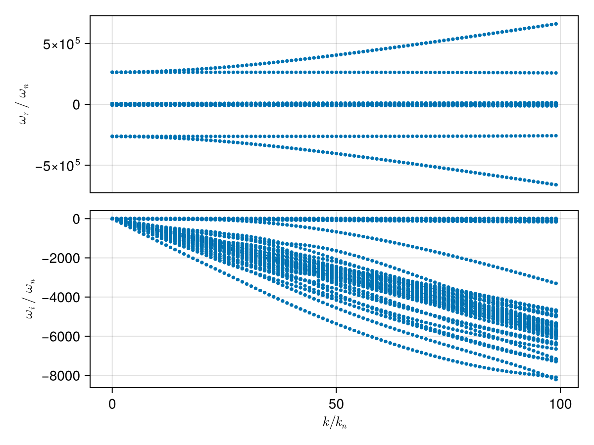
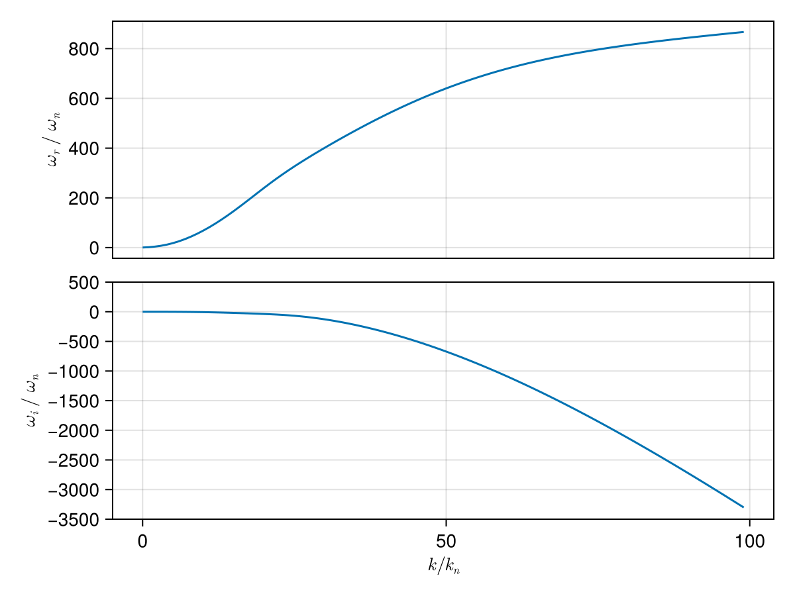
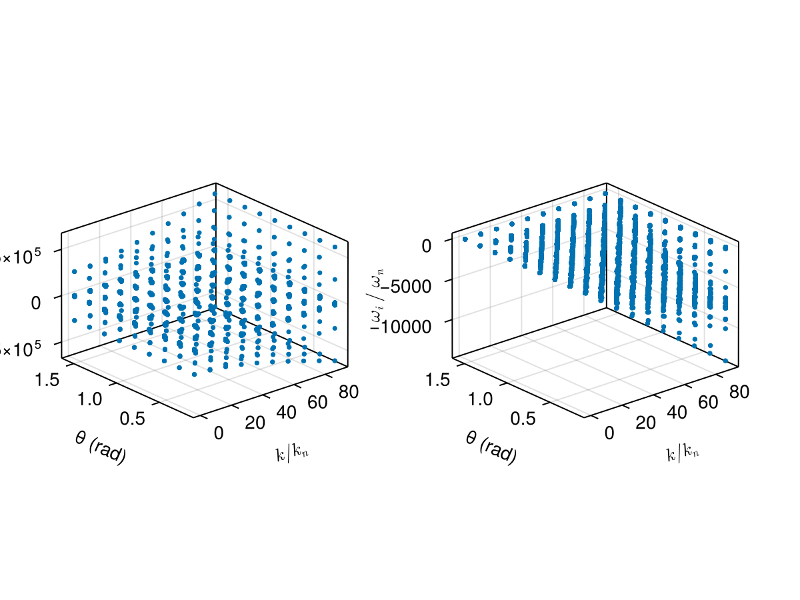
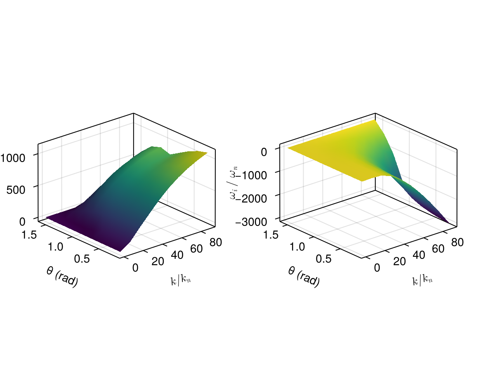

Case: Dispersion surface tracking (2D scan)
This page demonstrates how to construct a dispersion surface by scanning a 2D parameter space (wave number k and propagation angle θ) and using branch tracking to follow a consistent mode across the scan.
We consider a typical electron–proton plasma and scan:
kin normalized unitsk/k_n, wherek_n = ω_pi/cθfrom 5° to 90°
using PlasmaBO
using PlasmaBO: c0
B0 = 5e-9 # [Tesla]
n = 5.0e6
T = 12.94
ion = Maxwellian(:p, n, T)
electron = Maxwellian(:e, n, T)
species = (ion, electron)
wn = abs(B0 * ion.q / ion.m)
wpi = plasma_frequency(ion.q, n, ion.m)
kn = wpi / c0
wci = wn
# Kinetic solver settings (adjust upward for accuracy)
N = 33Dispersion Curve Scan
julia> using CairoMakiejulia> θ = deg2rad(45);julia> k_ranges = (0.01:1:100) .* kn;julia> results = solve(species, B0, k_ranges, θ; N)Solving dispersion (k, θ)... 14%|███▎ | ETA: 0:00:06 Solving dispersion (k, θ)... 49%|███████████▎ | ETA: 0:00:02 Solving dispersion (k, θ)... 83%|███████████████████▏ | ETA: 0:00:01 Solving dispersion (k, θ)... 100%|███████████████████████| Time: 0:00:03 PlasmaBO.DispersionSolution{StepRangeLen{Float64, Base.TwicePrecision{Float64}, Base.TwicePrecision{Float64}, Int64}, Float64, Matrix{Vector{ComplexF64}}}(9.81977277497953e-8:9.819772774979531e-6:0.0009722557024507233, 0.7853981633974483, Vector{ComplexF64}[[-126621.46687532174 - 3.0632293759680724e-11im, -126181.23357016452 + 2.7293211308282196e-10im, -125742.53584747206 + 5.4009749141434113e-11im, -2638.561512511618 - 0.240870749851208im, -2638.5615125116087 - 0.24087074985143478im, -2638.561512511606 - 0.24087074985088885im, -2638.447079403 - 0.2651185849426017im, -2638.4470794029917 - 0.2651185849421107im, -2638.4470794029708 - 0.2651185849428692im, -2638.354345226277 - 0.28028464658663194im … 2638.3543452262843 - 0.28028464658618557im, 2638.4470794029585 - 0.2651185849414875im, 2638.4470794029744 - 0.2651185849421557im, 2638.4470794029835 - 0.26511858494200297im, 2638.5615125116183 - 0.24087074985091594im, 2638.5615125116205 - 0.24087074984947776im, 2638.561512511631 - 0.2408707498518986im, 125742.53584747203 + 3.3253976217358905e-11im, 126181.23357016455 - 5.353963933719404e-10im, 126621.4668753219 - 5.505676995276457e-11im]; [-126647.93289248447 + 1.504618651892997e-11im, -126198.78018484444 + 3.794311565718418e-9im, -125768.49400451666 + 8.848435872899074e-11im, -2671.7111478483025 - 24.327945734952692im, -2671.711147848295 - 24.32794573495245im, -2671.7111475953243 - 24.32794638322004im, -2660.153403875818 - 26.776977079149237im, -2660.1534038758073 - 26.776977079149955im, -2660.1533937098166 - 26.776965185603164im, -2650.787333460303 - 28.30873735069656im … 2650.787333460303 - 28.308737350696425im, 2660.1533937098125 - 26.776965185602226im, 2660.1534038758014 - 26.776977079149926im, 2660.1534038758273 - 26.776977079149408im, 2671.7111475953243 - 24.327946383221047im, 2671.7111478482757 - 24.327945734952994im, 2671.7111478483025 - 24.327945734953346im, 125768.49400451659 - 8.062991980361282e-12im, 126198.78018484914 - 1.7684308439314307e-9im, 126647.93289248466 - 8.497760161349159e-11im]; … ; [-313940.6425425787 - 4.580113685847144e-8im, -313861.54641744494 - 4.991903224710805e-8im, -123618.23036716957 - 2.4524929155090996e-5im, -5887.225775507088 - 2360.774219289829im, -5887.056696386653 - 2360.9532339551015im, -5774.271214584553 - 2344.216598344499im, -5223.7344911557575 - 2588.810620991716im, -5109.542451363688 - 2214.2248374752257im, -5007.81577012101 - 2360.774219289829im, -5006.872705233714 - 2361.695775130936im … 5006.8727052337335 - 2361.695775130931im, 5007.815770121017 - 2360.7742192898395im, 5109.5424513636835 - 2214.224837475204im, 5223.734491155786 - 2588.8106209916887im, 5774.271214584529 - 2344.2165983445057im, 5887.0566963866095 - 2360.95323395508im, 5887.225775507102 - 2360.774219289845im, 123618.23036716954 - 2.4524209533843023e-5im, 313861.5464174444 - 4.976254786015488e-8im, 313940.64254257845 - 4.5585821339955146e-8im]; [-316611.46917836677 - 3.791741302896053e-8im, -316532.8275260983 - 5.7611548415619554e-8im, -123505.55495900479 - 2.5915254268034655e-5im, -5920.375410843776 - 2384.861294274936im, -5920.198173900979 - 2385.048572113649im, -5802.211344748028 - 2366.079352138613im, -5259.865772167284 - 2621.375288947596im, -5147.171836823981 - 2234.949525972808im, -5040.965405457695 - 2384.861294274945im, -5039.996688056853 - 2385.8060513072883im … 5039.996688056864 - 2385.806051307293im, 5040.96540545771 - 2384.8612942749373im, 5147.171836823996 - 2234.949525972837im, 5259.865772167354 - 2621.3752889475727im, 5802.211344748006 - 2366.0793521386286im, 5920.198173900955 - 2385.048572113638im, 5920.375410843779 - 2384.8612942749537im, 123505.55495900502 - 2.5914815467684694e-5im, 316532.82752609847 - 5.756783139077015e-8im, 316611.46917836723 - 3.786102809044678e-8im];;])
plot(results, kn, wn)
using PlasmaBO: plot_branches
# k, ω pairs for initial branch points (see `BranchPoint` for more control over tracking)
initial_point = (50 * kn, -600 * wn *im)
branch = track(results, initial_point)
f, (ax1, ax2) = plot_branches((branch,), kn, wn)
ylims!(ax2, -3500,500)
f
Dispersion Surface Scan (2D)
julia> ks = (0.1:10:100.0) .* kn;julia> θs = deg2rad.(10.0:10.0:90.0);julia> res2d = solve(species, B0, ks, θs; N)Solving dispersion (k, θ)... 33%|███████▋ | ETA: 0:00:02 Solving dispersion (k, θ)... 72%|████████████████▋ | ETA: 0:00:01 Solving dispersion (k, θ)... 100%|███████████████████████| Time: 0:00:02 PlasmaBO.DispersionSolution{StepRangeLen{Float64, Base.TwicePrecision{Float64}, Base.TwicePrecision{Float64}, Int64}, Vector{Float64}, Matrix{Vector{ComplexF64}}}(9.81977277497953e-7:9.81977277497953e-5:0.0008847615270256557, [0.17453292519943295, 0.3490658503988659, 0.5235987755982988, 0.6981317007977318, 0.8726646259971648, 1.0471975511965976, 1.2217304763960306, 1.3962634015954636, 1.5707963267948966], Vector{ComplexF64}[[-126621.80021764731 + 1.4745838928977972e-10im, -126181.24223376012 + 1.7608541372848677e-9im, -125742.87385793989 + 2.7269468159054505e-11im, -2642.8468602838793 - 3.3546755347059967im, -2642.846860283879 - 3.354675534704949im, -2642.8468602838693 - 3.354675534707002im, -2641.2531177885894 - 3.692382039957863im, -2641.253117788588 - 3.692382039957579im, -2641.2531177885817 - 3.692382039954426im, -2639.9615824984103 - 3.9036040998681054im … 2639.9615824983944 - 3.9036040998672252im, 2641.2531177885794 - 3.692382039954396im, 2641.253117788582 - 3.692382039957151im, 2641.2531177885894 - 3.6923820399581304im, 2642.846860283859 - 3.3546755347059696im, 2642.8468602838648 - 3.354675534707439im, 2642.84686028387 - 3.3546755347064403im, 125742.87385793864 - 1.5180715886788164e-10im, 126181.24223376006 - 1.759200686945752e-9im, 126621.80021764812 - 2.5807188883980047e-11im] [-126621.7854239163 + 1.3345555281533972e-10im, -126181.2720491103 + 1.361748673026373e-9im, -125742.85883577912 - 2.6433495332650516e-11im, -2642.635357548893 - 3.20099413865513im, -2642.6353575488915 - 3.2009941386552923im, -2642.63535754888 - 3.2009941386597167im, -2641.1146261597596 - 3.523229935445282im, -2641.114626159749 - 3.5232299354455194im, -2641.1146261596905 - 3.523229935384756im, -2639.8822575298836 - 3.7247756791436046im … 2639.882257529872 - 3.7247756791431996im, 2641.1146261597146 - 3.5232299353826875im, 2641.1146261597673 - 3.523229935446632im, 2641.1146261597737 - 3.5232299354459737im, 2642.635357548875 - 3.200994138659115im, 2642.63535754888 - 3.2009941386550054im, 2642.6353575488833 - 3.2009941386562613im, 125742.85883577954 - 1.3618074783783595e-10im, 126181.2720491103 - 1.3636948735066575e-9im, 126621.78542391637 + 2.5317026390679366e-11im] … [-126621.64002586043 + 4.3285661621879357e-11im, -126181.56492171869 - 1.7542747617382717e-10im, -125742.71135517815 + 1.3867172312515257e-10im, -2639.044090343324 - 0.5915198082936562im, -2639.0440903433064 - 0.591519808291093im, -2639.044090343226 - 0.5915198085219845im, -2638.7630705410943 - 0.6510665767273636im, -2638.7630705410684 - 0.6510665767285927im, -2638.763070537405 - 0.6510665725315069im, -2638.5353380520714 - 0.688310720057223im … 2638.5353380520746 - 0.6883107200578445im, 2638.763070537419 - 0.6510665725318172im, 2638.7630705410857 - 0.6510665767290008im, 2638.763070541093 - 0.6510665767293129im, 2639.044090343231 - 0.5915198085228872im, 2639.0440903433246 - 0.5915198082905662im, 2639.0440903433314 - 0.5915198082904373im, 125742.7113551784 - 4.122859059431105e-11im, 126181.56492171864 + 1.7670558846947382e-10im, 126621.64002586014 - 1.3632618732179563e-10im] [-126621.63488255261 + 1.8660107265920303e-10im, -126181.5752763477 - 5.198780429120771e-10im, -125742.70614359833 - 2.3378090879204842e-11im, -2638.2300161582643 - 5.8975047068088315e-12im, -2638.2300161582602 + 2.8244073746463982e-12im, -2638.230016158258 + 1.8385695825201356e-13im, -2638.2300161582575 - 1.1368683775158321e-12im, -2638.2300161582575 + 4.067059189427624e-15im, -2638.2300161582566 - 1.3350831846554352e-13im, -2638.230016158255 - 1.4939161019356106e-12im … 2638.230016158256 + 6.278997422455368e-14im, 2638.230016158257 + 1.3986698836930398e-13im, 2638.2300161582575 + 2.683964162031316e-14im, 2638.23001615826 + 6.605018679330864e-13im, 2638.2300161582616 + 5.995204332975845e-15im, 2638.2300161582684 - 1.667554982986985e-13im, 2638.230016158272 - 3.843218249967615e-14im, 125742.70614359851 - 1.8899513743465247e-10im, 126181.5752763474 + 5.194232955611906e-10im, 126621.63488255252 + 2.5448194578315885e-11im]; [-130046.23180107077 - 4.443842976540878e-11im, -129226.3567274119 - 4.129215349081138e-10im, -126179.48881185676 - 7.103251680758035e-9im, -3104.531272846234 - 338.8222290053433im, -3104.5312728462213 - 338.8222290053455im, -3104.5312579689903 - 338.822255573203im, -2943.5632808220657 - 372.93058603577134im, -2943.563280822035 - 372.93058603576645im, -2943.562949292049 - 372.9300363356345im, -2813.1214069619896 - 394.26414247912885im … 2813.1214069620078 - 394.26414247912845im, 2943.5629492920652 - 372.9300363356329im, 2943.5632808220125 - 372.9305860357674im, 2943.563280822025 - 372.93058603576617im, 3104.5312579689958 - 338.822255573203im, 3104.5312728462573 - 338.82222900534555im, 3104.5312728462786 - 338.82222900534487im, 126179.48881185663 + 1.8436203674809803e-9im, 129226.35672741261 + 1.2630208282906438e-10im, 130046.23180107036 - 2.1297164308112888e-10im] [-130020.12452197865 - 2.474318696537279e-10im, -129238.36480583763 + 1.3546087464378585e-10im, -126168.23913100736 - 2.4852412625096207e-9im, -3083.169496612823 - 323.3004080042064im, -3083.169496612822 - 323.3004080042667im, -3083.1692757925985 - 323.30080396482435im, -2929.575626311553 - 355.8462234799582im, -2929.5756263107096 - 355.84622347884783im, -2929.5706565881733 - 355.83805036378277im, -2805.1539693956092 - 376.2040008429479im … 2805.153969395617 - 376.2040008429492im, 2929.5706565881865 - 355.83805036378516im, 2929.5756263107387 - 355.8462234788496im, 2929.5756263115504 - 355.84622347995924im, 3083.169275792585 - 323.3008039648239im, 3083.169496612805 - 323.30040800426565im, 3083.1694966128216 - 323.3004080042099im, 126168.23913100653 - 1.5381829143734649e-9im, 129238.36480583806 - 2.630883406450241e-10im, 130020.12452197807 - 1.8154034538185341e-10im] … [-129717.7669890637 - 4.1210454778377283e-10im, -129565.62966482164 + 1.7686985274137151e-9im, -126098.7104722242 + 7.047263417405673e-11im, -2720.4515088506178 - 59.74350063742437im, -2720.4515087463433 - 59.743500890124636im, -2720.441047385943 - 59.76658704798136im, -2692.0685088262753 - 65.75772424952568im, -2692.068504945133 - 65.7577195586528im, -2691.7332892098716 - 65.28442184344063im, -2671.573974835492 - 69.52398918934739im … 2671.5739748355036 - 69.52398918934917im, 2691.7332892098643 - 65.28442184344009im, 2692.068504945129 - 65.75771955865596im, 2692.068508826289 - 65.75772424952658im, 2720.4410473859293 - 59.76658704797956im, 2720.451508746338 - 59.74350089012536im, 2720.4515088506064 - 59.743500637423764im, 126098.71047222443 - 2.1346431133134613e-11im, 129565.6296648197 - 1.723601960791621e-9im, 129717.76698906266 + 5.459811348395127e-10im] [-129668.76650537699 - 4.573685695476488e-11im, -129616.10202991594 - 4.321808166010272e-9im, -126096.80894501731 + 7.146527673833257e-11im, -2638.2300161588814 + 1.2367275671319643e-11im, -2638.2300161582752 - 6.582429913637444e-14im, -2638.230016158274 + 8.721981470394269e-13im, -2638.230016158265 + 4.590140386260449e-13im, -2638.2300161582602 - 1.236510893676268e-13im, -2638.23001615826 - 8.881784197001252e-14im, -2638.230016158259 + 2.5579538487363607e-13im … 2638.2300161582552 - 1.2747017020532903e-13im, 2638.2300161582575 + 1.029104149011459e-13im, 2638.2300161582602 + 2.2737367544323206e-13im, 2638.230016158261 + 5.975452379609671e-14im, 2638.2300161582652 - 4.176066439684296e-14im, 2638.2300161582684 - 4.440892098500626e-14im, 2638.2300161582907 - 4.387900762476275e-12im, 126096.80894501752 - 7.11887143299389e-11im, 129616.10202991083 - 3.748635621775052e-12im, 129668.76650537743 + 4.411654081011157e-11im]; … ; [-267526.6897011372 - 1.4132981946371453e-8im, -267333.9463584652 - 1.4655298216623728e-8im, -126172.77219117121 - 8.131290094409836e-5im, -6336.322160782849 - 2687.0951032998155im, -6336.322159074711 - 2687.0951046508994im, -6336.238399861369 - 2687.1449193165167im, -5456.912155396765 - 2687.0951032998105im, -5456.911892188208 - 2687.0952728599023im, -5452.350753781649 - 2688.524627711351im, -5059.887961382805 - 2955.986624764857im … 5059.887961382777 - 2955.9866247648533im, 5452.350753781647 - 2688.524627711373im, 5456.9118921882555 - 2687.095272859906im, 5456.912155396817 - 2687.095103299818im, 6336.238399861375 - 2687.1449193165154im, 6336.322159074729 - 2687.0951046509076im, 6336.322160782841 - 2687.0951032998023im, 126172.77219117146 - 8.131338920363003e-5im, 267333.94635846466 - 1.4582838048227131e-8im, 267526.689701137 - 1.4071702025830746e-8im] [-267503.426152453 - 4.3421395634961234e-8im, -267319.9842888092 - 4.4511163098725134e-8im, -126162.67963775943 - 5.87445903021937e-5im, -6166.9084700605 - 2563.9963050630745im, -6166.908058156671 - 2563.99664824267im, -6164.913344602661 - 2564.449767607718im, -5287.49846467448 - 2563.9963050630804im, -5287.483269961897 - 2564.0081406182835im, -5251.723729621536 - 2561.224472491426im, -4965.899650699189 - 2797.0124659387766im … 4965.899650699183 - 2797.0124659387725im, 5251.723729621526 - 2561.2244724914276im, 5287.483269961939 - 2564.008140618279im, 5287.498464674468 - 2563.996305063088im, 6164.9133446026135 - 2564.44976760771im, 6166.908058156653 - 2563.996648242676im, 6166.908470060512 - 2563.9963050630618im, 126162.67963775955 - 5.8745964321907964e-5im, 267319.9842888083 - 4.470348358154297e-8im, 267503.4261524521 - 4.351386451162398e-8im] … [-266971.7163171804 + 2.5051585863972453e-10im, -265749.9611086693 - 2.380342850642615e-10im, -118413.00558056604 - 6.226634021290904e-10im, -3290.3034384016087 - 473.80736644135646im, -3290.1314368731587 - 474.11199823526493im, -3257.8228059653393 - 512.8095690844068im, -3222.7561454919505 - 423.95071091181705im, -3065.206576822463 - 521.5043279591112im, -3061.7978352007967 - 514.4723377181108im, -2972.3664005259416 - 742.6364618166252im … 2972.3664005259043 - 742.6364618165768im, 3061.7978352008117 - 514.4723377181132im, 3065.206576822449 - 521.5043279591087im, 3222.7561454919 - 423.95071091185093im, 3257.8228059653375 - 512.8095690843513im, 3290.1314368731414 - 474.111998235264im, 3290.3034384016064 - 473.80736644135885im, 118413.0055805662 - 6.999145479076894e-10im, 265749.9611086689 - 1.996601034668208e-10im, 266971.7163171821 - 7.294476134234174e-10im] [-267036.43382901547 + 6.374913463632069e-10im, -265686.805432645 + 9.450218385609332e-12im, -117722.5831798405 - 4.174441306022419e-11im, -2638.230016158504 - 1.56035184772918e-11im, -2638.23001615826 - 7.993605777301127e-13im, -2638.2300161582552 - 2.486483241526116e-13im, -2638.230016158255 - 4.263256414560601e-13im, -2638.2300161582534 + 8.668621376273222e-13im, -2638.2300161582516 + 6.226130722097878e-13im, -2638.2300161582484 + 5.651488898809674e-13im … 2638.230016158254 - 3.410605131648481e-13im, 2638.2300161582543 + 2.1151228385668085e-14im, 2638.2300161582543 + 5.002220859751105e-12im, 2638.230016158258 - 8.520988416910054e-14im, 2638.2300161582593 - 1.2014855587938534e-13im, 2638.23001615826 - 3.531397396727698e-12im, 2638.2300161585613 - 1.1855765994124657e-10im, 117722.58317984031 + 4.2538460705088805e-11im, 265686.80543264427 - 3.717409859004071e-12im, 267036.43382901547 - 7.943285376057205e-10im]; [-293795.779941253 - 1.4079205186484281e-8im, -293635.99998901796 - 1.502529269575618e-8im, -126176.20945010243 - 0.0001453280360572606im, -6798.006573345242 - 3022.5626567704626im, -6798.006569082723 - 3022.5626598751564im, -6797.868548884281 - 3022.626622724913im, -5918.596567959168 - 3022.562656770424im, -5918.596049435937 - 3022.5629806517513im, -5912.412511842636 - 3023.7110549457807im, -5362.5463847418705 - 3324.62200947557im … 5362.5463847418705 - 3324.62200947558im, 5912.412511842637 - 3023.711054945776im, 5918.596049435914 - 3022.562980651731im, 5918.596567959184 - 3022.5626567704453im, 6797.868548884258 - 3022.626622724909im, 6798.006569082716 - 3022.5626598751483im, 6798.006573345196 - 3022.5626567704358im, 126176.20945010259 - 0.00014533034421106142im, 293635.9999890174 - 1.514126779511571e-8im, 293795.77994125255 - 1.4242687029764056e-8im] [-293760.47248716035 - 4.425152195723936e-8im, -293608.73013647314 - 4.591483070623837e-8im, -126161.30746211307 - 0.00010509088109263144im, -6607.442609124479 - 2884.0957189286346im, -6607.441666758608 - 2884.096504753402im, -6603.932590101871 - 2884.454698933355im, -5728.032603738386 - 2884.095718928625im, -5728.005596155134 - 2884.117128739092im, -5675.996686715509 - 2874.6337340819905im, -5269.21111222058 - 3146.1229528952895im … 5269.211112220584 - 3146.1229528952904im, 5675.996686715498 - 2874.6337340819764im, 5728.00559615514 - 2884.117128739094im, 5728.032603738382 - 2884.095718928626im, 6603.932590101881 - 2884.454698933361im, 6607.441666758606 - 2884.0965047534046im, 6607.442609124466 - 2884.0957189286287im, 126161.30746211295 - 0.0001050911793780031im, 293608.730136475 - 4.583853296935558e-8im, 293760.472487162 - 4.415778676047921e-8im] … [-292980.7785929866 - 6.789080231259271e-10im, -291734.3181264644 + 7.539310184116689e-11im, -114316.92957399442 - 1.3821559241286273e-9im, -3371.7108569089005 - 532.95934727049im, -3371.451855609977 - 533.4071868750956im, -3335.4645308844933 - 586.1181888842398im, -3304.8366858131985 - 469.5498780833457im, -3118.512015107623 - 586.6109856319107im, -3113.8841631327377 - 575.9049885785564im, -3014.455552918264 - 846.68454310847im … 3014.4555529183244 - 846.6845431084887im, 3113.884163132734 - 575.9049885785555im, 3118.5120151076294 - 586.610985631904im, 3304.8366858131985 - 469.5498780833533im, 3335.464530884486 - 586.1181888842547im, 3371.4518556099856 - 533.4071868750897im, 3371.7108569088823 - 532.9593472704875im, 114316.92957399438 - 1.1739403127330456e-9im, 291734.3181264643 + 9.561361965359851e-11im, 292980.7785929869 + 2.9682922786378185e-10im] [-293060.7825108112 + 3.245862625885583e-10im, -291674.08543779317 + 7.352309618054112e-11im, -113340.75968884504 - 2.3344484255396962e-11im, -2638.2300161585554 + 2.5899754130260715e-10im, -2638.2300161584635 + 4.253782712335541e-9im, -2638.230016158261 + 7.328439517349516e-11im, -2638.2300161582566 - 4.2030956729009655e-13im, -2638.2300161582566 + 3.623767952376511e-13im, -2638.230016158256 - 1.0014532855309098e-13im, -2638.2300161582557 + 1.5418777365994174e-12im … 2638.2300161582507 + 5.544979054534977e-12im, 2638.2300161582516 - 6.963318810448982e-13im, 2638.2300161582525 - 1.5754064719430971e-12im, 2638.230016158258 - 1.856214588977288e-13im, 2638.230016158263 - 1.3181677971374484e-12im, 2638.2300161582675 - 2.83550960489265e-13im, 2638.23001615837 + 9.725470501495545e-11im, 113340.75968884472 + 1.7540706767969876e-11im, 291674.0854377941 - 6.805698596367739e-12im, 293060.78251081135 + 5.215641879973906e-10im]])
plot(res2d, kn, wn)
# Choose a reference angle and reference k for seeding the tracked mode
seed = (90.5 * kn, deg2rad(20), (1000 - 3000im) * wn)
branch = track(res2d, seed)
plot_branches((branch,), kn, wn)